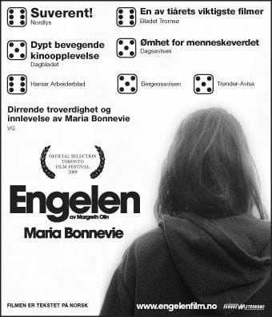

Filmrom: Engelen + intervju med Margreth Olin
- Dato:
- 24.01.2013 til 24.01.2013
- Start kl :
- 19:00
- Slutt kl :
- 22:00
- Adresse:
- Norsk Skuespillersenter, Welhavensgate 1, Oslo
 Møt Tove Kampestuen Heyerdahl i samtale med filmregissør Margreth Olin etterfulgt av visning av den kritikerroste filmen Engelen. Vi byr på popkorn og noe godt i glasset.
{kind=link}
Filmrom er skuespillernes egen filmklubb. Film er et viktig og voksende arbeidsområde for norske skuespillere, men skuespillerkunstens vilkår på et filmsett er lite diskutert. I Filmrom vil vi ha en åpen samtale med en regissør om hans/hennes arbeid med skuespillerne, ulike regigrep og andre temaer som er aktuelle for skuespillere, regissører og alle andre som er interessert i film! Etter samtalen blir det filmvisning.
Velkommen til hyggelige torsdagskvelder med film, faglige interessante samtaler og en trivelig bar!
Om Margreth Olin
Margreth Olin er en norsk filmregissør og manusforfatter med utdannelse fra Universitetet i Bergen og Høgskulen i Volda. I 1998 hadde hennes første helaftens dokumentar Dei mjuke hendene kinopremiere og mottok en lang rekke priser inkl. Amanda. Hun slo gjennom for alvor med filmen Kroppen Min (2002), som vant Amanda for beste dokumentar, Gullstolen og publikumsprisen på Kortfilmfestivalen i Grimstad, samt flere priser på festivaler i utlandet. Ungdommens råskap fra 2004 er sett av nesten 60 000 på norske kinoer. Høsten 2009 fikk hun stor oppmerksomhet for debuten som spillefilmregissør med Engelen med Maria Bonnevie i hovedrollen.
Om Engelen
Engelen er en historie om kvinner. Om det å bære og arve mammas sår. Når avhengighet styrer alle valgene du tar. Lea vokser opp i et hjem preget av manglende beskyttelse. Fra å være en livsglad og nysgjerrig liten jente forandrer livet seg brutalt når moren Madeleine vender tilbake til sin eksmann Ole. Dødsdansen mellom to voksne skader barnet som vokser opp mellom dem. Rus blir det som gjør at Lea klarer å stå i en hverdag sammen med familien sin. Så får Lea datteren Sonja og ønsker å bryte med familien sin og starte på nytt. Hun vil ta vare på barnet og gi henne den beskyttelsen hun selv ikke fikk. Men Lea skjønner snart at hun mangler denne evnen og må derfor gjøre et umulig valg.